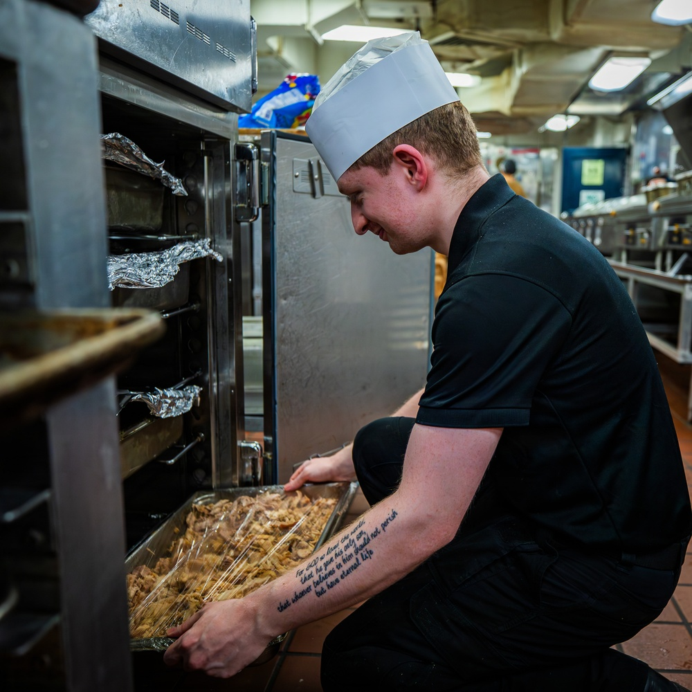

Feeding 5,000 Sailors a Thanksgiving meal aboard a moving aircraft carrier takes months of planning, and this year the crew of USS George Washington pulled it off in the Indian Ocean after a mid-deployment fleet transition briefly complicated their supply chain
DVIDS reports holiday food shipment planning for George Washington's Thanksgiving meal began as early as July, with the first loadout departing the continental U.S. in early fall and the final critical items arriving just before the holiday. A transition between fleet areas of operations created a temporary obstacle for the ship's supply chain, resolved through the supply department's planning, according to supply officer Cmdr. Adam Hilliard, who called it "a no-fail mission." Culinary specialists split into specialized turkey, sides and bakery teams, firing ovens at 2 a.m. Thanksgiving morning and keeping them running until 3:30 p.m., while offering a modified breakfast and lunch menu to free up equipment for the feast. "Giving thanks is not just a tradition, but a reminder of the resilience and unity that makes our crew strong," said Chief Warrant Officer 3 Krystle Mattia, the ship's food services officer. "We provide a service to Sailors all across the fleet that cannot go home," said Chief Culinary Specialist Raymon Solomon. "I think it's a beautiful thing."